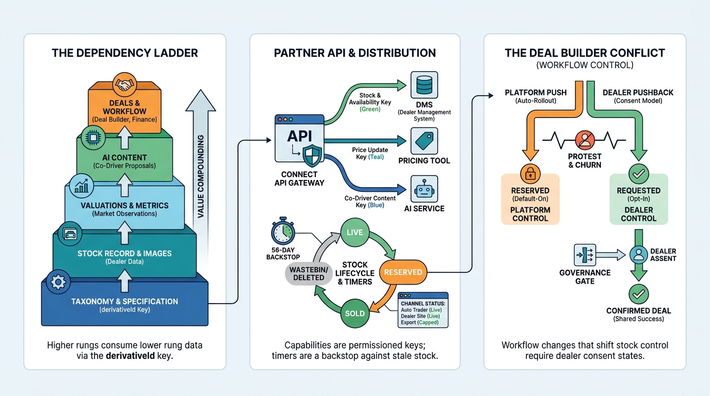

Part X — PRACTICE: How Others Built It
Auto Trader UK: From Classifieds Portal to Data and Software Platform for Retailers

Image generated by Google Gemini (gemini-3-pro-image-preview)
Part X — PRACTICE: How Others Built It

Image generated by Google Gemini (gemini-3-pro-image-preview)